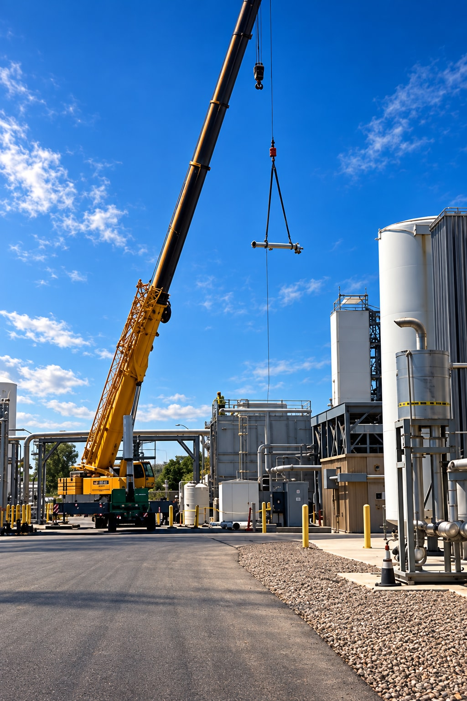

NorthStarWe Bring Answers.
NorthStarWe Bring Answers.Decommissioning
Planning guide / 01
Planning guide / 01
Decommissioning / Planning guide
Before a facility closes, its next condition needs a plan.
For asset owners and facility leaders planning a closure, consolidation or transition, NorthStar connects dismantlement, recovery, abatement and site work with the decisions that shape decommissioning.

Four destinations. One coordinated discussion.
Retain. Relocate. Recover. Remove. Classifying assets and materials this way helps connect owner priorities with the work sequence, utility interfaces and condition required for the next use.
Asset decisionsUtility interfacesEnd-state planning